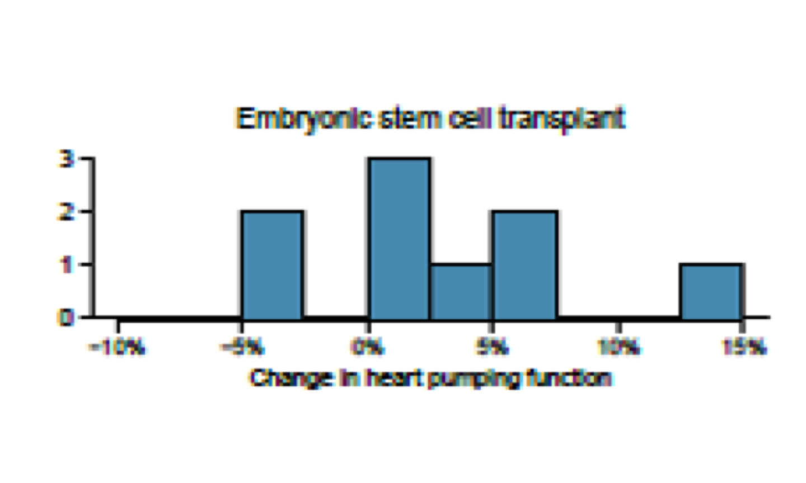
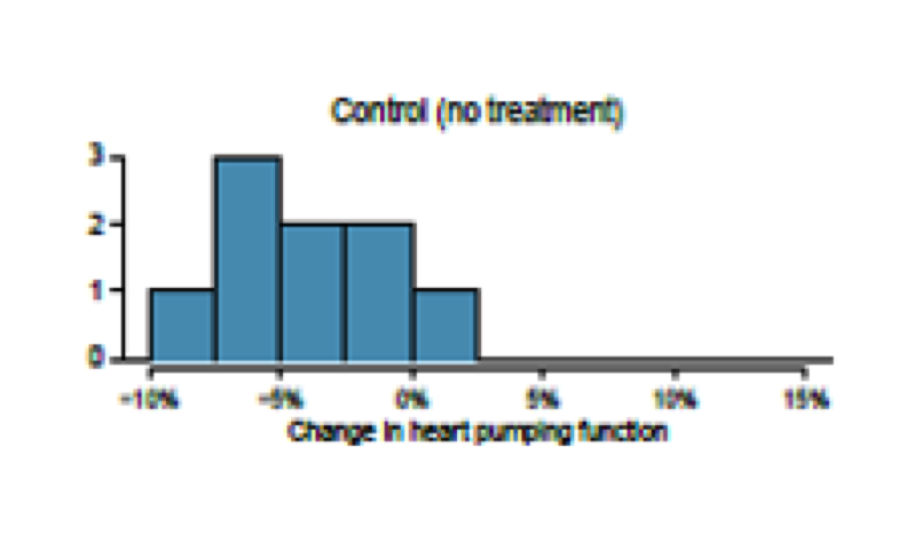
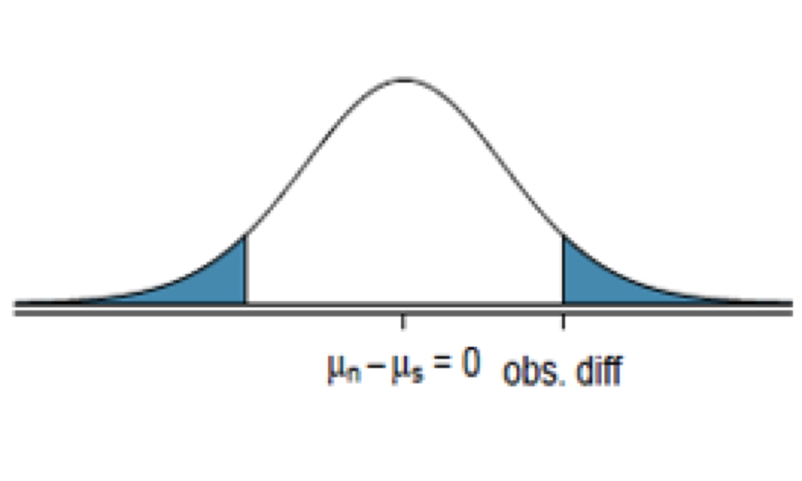
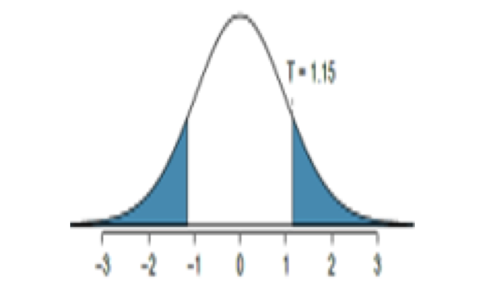

These notes use content from OpenIntro Statistics Slides by
Mine Cetinkaya-Rundel.
These notes use content from OpenIntro Statistics Slides by
Mine Cetinkaya-Rundel.
In this section, we discuss a difference of two population means, \(\mu_1 - \mu_2\), under the condition that the data are not paired.
We use \(\bar{x_1}- \bar{x_2}\) as a point estimate, and a new formula for standard error and t-distribution for construction of confidence interval and hypothesis testing.
The t-distribution can be used for inference when working with the standardized difference of two means if
Independence, extended. The data are independent within and between the two groups, e.g. the data come from independent random samples or from a randomized experiment.
Normality. We check the outliers rules of thumb for each group separately.
The standard error may be computed as
\(SE= \sqrt{\frac{{\sigma_1}^2}{n_1} + \frac{{\sigma_2}^2}{n_2}} \approx \sqrt{\frac{{s_1}^2}{n_1} + \frac{{s_2}^2}{n_2}}\)
For degrees of freedom, the official formula is quite complex and is generally computed using software.
We may use \(df = min(n_1-1,n_2 -1)\) for the degrees of freedom of t-distribution if software isn’t readily available.


Construct the CI for the difference \(\mu_{esc} - \mu_{control}\)
Point- Estimate : \(\bar{x}_{esc} - \bar{x}_{control} = 3.50-(-4.33)= 7.83\)
\(SE= \sqrt{\frac{{\sigma_1}^2}{n_1} + \frac{{\sigma_2}^2}{n_2}} \approx \sqrt{\frac{{s_1}^2}{n_1} + \frac{{s_2}^2}{n_2}}\\ = \sqrt{\frac{{5.17}^2}{9} + \frac{{2.76}^2}{9}} \approx 1.9535\)
For 95% confidence interval, with df=8, find
\(t_{\frac{\alpha}{2}}= t_{0.025}= 2.31\)
CI: \(\text{point estimate} \pm t_{\frac{\alpha}{2}} \times S.E\)
That is, \(7.83 \pm 2.31 \times 1.95, (3.32,12.34)\)
Interpret: We are 95% confident that embryonic stem cells improve the heart’s pumping function in sheep that have suffered a heart attack by 3.32% to 12.34%.
We would like to know, is there convincing evidence that newborns from mothers who smoke have a different average birth weight than newborns from mothers who don’t smoke?
Set up Hypothesis
\(H_0\): There is no difference in average birth weight for newborns from mothers who did and did not smoke,
\(H_0: \mu_𝑛−\mu_𝑠=0\)
where subscript n represents non-smoking mothers and s represents mothers who smoked.
\(H_a\): There is some difference in average newborn weights from mothers who did and did not smoke.
\(H_a: \mu_𝑛−\mu_𝑠\ne 0.\)
\(H_0: \mu_𝑛−\mu_𝑠= 0.\) \(H_a: \mu_𝑛−\mu_𝑠\ne 0.\)
We will use the North Carolina sample to try to answer this question. The summary is as the following:Compute Standard Error
\(S.E. \approx \sqrt{\frac{{s_n}^2}{n_n} + \frac{{s_s}^2}{n_s}}=\sqrt{\frac{{1.60}^2}{100} + \frac{{1.43}^2}{50}} = 0.26\)
\(H_0: \mu_𝑛−\mu_𝑠= 0.\) \(H_a: \mu_𝑛−\mu_𝑠\ne 0.\)
\(S.E. \approx \sqrt{\frac{{s_n}^2}{n_n} + \frac{{s_s}^2}{n_s}}\\=\sqrt{\frac{{1.60}^2}{100} + \frac{{1.43}^2}{50}} = 0.26\)
Compute test statistic
\(\bar{x_n} - \bar{x_s}\) = 7.18 -6.78= 0.40
\(t= \frac{0.40-0}{0.26}=1.538462 \approx 1.5385\)
Compute P-Value
Use \(df = min(49,99)= 49, P(|T| > 1.5385) = 2 \times P(T> 1.5385)=0.13\)
t <- 0.4/0.26; t p_value <- 2*pt(1.5385,49, lower.tail = FALSE);p_value
\(H_0: \mu_𝑛−\mu_𝑠= 0.\) \(H_a: \mu_𝑛−\mu_𝑠\ne 0.\)
\(t= 1.5385\)
P-Value(df=49)
\(P(|T|> 1.5385) =0.13\)

As the P-value is larger than 0.05, so we do not reject the null hypothesis. There is insufficient evidence to say there is a difference in average birth weight of newborns from North Carolina mothers who did smoke during pregnancy and newborns from North Carolina mothers who did not smoke during pregnancy.
Note: Research suggesting smoking is harmful during pregnancy (\(H_a\) is true) , so how could we fail to reject the null hypothesis?
It is possible the data did not detect it— a Type II error. To correct, we may need to get larger sample size.
The instructor would like to evaluate whether the difference observed in the groups is so large that it provides convincing evidence that Version B was more difficult (on average) than Version A. Test using \(\alpha\)=0.01.
\(H_0: \mu_A -\mu_B = 0\) The exams are equally difficult on average.
\(H_a: \mu_A -\mu_B \ne 0\) The exams are not equally difficult; one version is more difficult than the other on average.

\(SE \approx \sqrt{\frac{{s_A}^2}{n_A} + \frac{{s_B}^2}{n_B}} = \sqrt{\frac{{14}^2}{30} + \frac{{20}^2}{27}} \approx 4.62\)
Test Statistic
\(t = \frac{\bar{x}_{A}- \bar{x}_{B}- 0}{S.E} = \frac{79.4-74.1}{4.62}= 1.15\)
P-Value (df= min(29,26)= 26)
P(|T| > 1.15) = 0.26
Conclusion
As the P-value is larger than 0.01, so we do not reject the null hypothesis. There is insufficient evidence to say one version is more difficult than the other.
Occasionally, two populations may have standard deviations that are so similar that they can be treated as identical \((\sigma_1 \approx \sigma_2)\). In such cases, we can make the t-distribution approach slightly more precise by using a pooled standard deviation.
If \(s_1\) and \(s_2\) are the standard deviations of groups 1 and 2 and there are very good reasons to believe \((\sigma_1 \approx \sigma_2)\), then we can obtain an improved estimate of the group variances by pooling their data:
\({s}^2_{pooled} = \frac{{s}^2_1(n_1 -1)+{s}^2_2(n_2 -1)}{n_1 +n_2-2}\)
\(S.E. = \sqrt{\frac{{S}^2_{pooled}}{n_1 +n_2 -2}}\)
\(df = n_1 + n_2 -2\)
These two changes may permit a more accurate model of sampling distribution of \(\bar{x}_{1} - \bar{x}_{2}\)